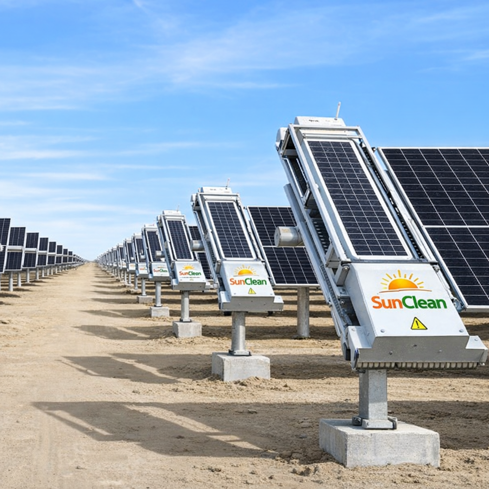

Enhancing Solar Plant Performance Through Robotics, Automation and Smart Monitoring Technologies


MW Solar Assets Supported
Technology Solutions
Project Reach
Technical Support
SunClean Tech is an emerging technology company focused on developing and delivering innovative products for the solar energy sector.
We help solar plant owners, EPC companies, O&M contractors, and renewable energy developers improve operational efficiency through automation, robotics, monitoring systems, and smart asset management solutions.
Our goal is simple: help solar power plants generate more energy while reducing maintenance costs and operational challenges.
Advanced robotic technologies
Higher solar generation output
Future-ready solutions
Smart technologies designed to improve solar plant performance, operational efficiency, safety, and asset reliability.

Automated cleaning solutions designed for rooftop and utility-scale solar plants. Our solar cleaning robots help remove dust, dirt, bird droppings, and other contaminants that reduce solar module efficiency.
Autonomous vegetation management solutions designed to maintain large solar parks efficiently. Grass cutter robots help reduce shading losses, fire hazards, and maintenance costs.
Advanced robotic surveillance systems equipped with cameras and intelligent monitoring capabilities for protecting valuable solar assets and plant infrastructure.
Thermal inspection drones help identify module hotspots, string faults, loose connections, and performance issues before they impact plant generation.
Multi-purpose drones designed for visual inspection, mapping, progress monitoring, and operational assessment of solar power plants.
Advanced weather monitoring systems provide accurate environmental and meteorological data required for performance analysis, forecasting, and plant optimization.
From assessment to deployment and optimization.
Evaluate plant conditions and operational challenges.
Select the most suitable technology stack.
Installation and commissioning support.
Continuous improvement and performance enhancement.
Delivering innovative solar technologies to renewable energy professionals across India.
Discover how SunClean's advanced technologies can improve solar plant performance, reduce maintenance costs, and enhance operational efficiency.